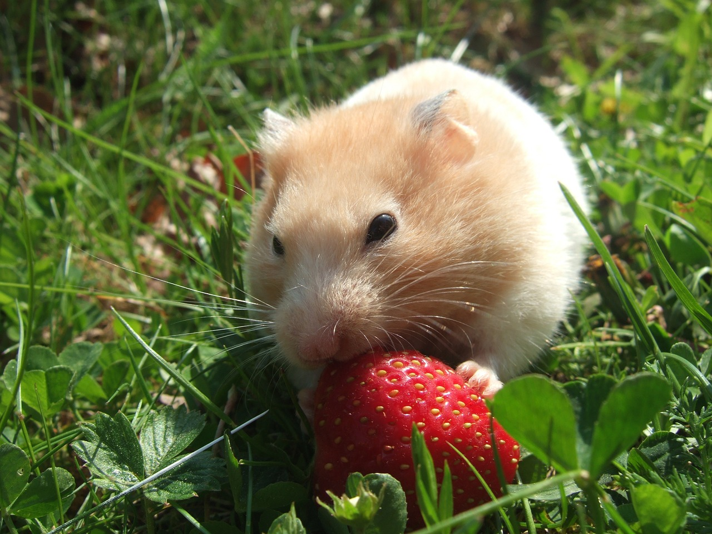

Conta
Conta
Curiosidades
Nesse Site, vamos apresentar algumas curiosidades recentes sobre os Animais de Estimação e Silvestres.
Atualizamos toda semana.
Animais de Estimação
1 - Cães

Você sabia que os cachorros possuem um olfato incrivelmente desenvolvido?
Eles possuem cerca de 220 milhões de células olfativas,
enquanto os humanos têm apenas cerca de 5 milhões.
Essa capacidade olfativa superior permite que os cães identifiquem odores com uma precisão surpreendente.
2 - Gatos

Os gatos têm a habilidade de saltar sete vezes a altura de seu corpo,
graças à flexibilidade de suas colunas vertebrais e pernas traseiras poderosas.
Eles dormem em média 16 horas por dia, mas alguns gatos podem dormir até 20 horas por dia!
Só não é verdade que ele tenha 7 vidas…
3 - Papagaios

Os papagaios são capazes de imitar a fala humana, e podem até mesmo compreender algumas palavras e frases que aprendem.
Isso não quer dizer, no entanto, que se possa manter uma conversação com eles…
4 - Coelhos

Coelhos têm um sistema digestivo muito sensível, e devem comer uma dieta rica em feno para manter a saúde de seus dentes e sistema digestivo.
Eles podem saltar até 3 vezes o comprimento do próprio corpo e atingir uma velocidade de até 56 km/h.
5 - Hamsters
Os hamsters possuem bochechas expansíveis, que usam para armazenar alimentos e transportá-los para seus esconderijos.
Animais Silvestres
1 - Leões

O leão é o único felino que vive em grupos chamados de “manadas”, composta por até 30 indivíduos.
2 - Leopardos

O leopardo é um felino conhecido por sua habilidade de subir em árvores, o que lhe permite escapar de outros predadores.
3 - Guepardos
O guepardo é o animal terrestre mais rápido do mundo, podendo atingir velocidades de até 120 km/h.
4 - Cobras
As cobras são capazes de engolir presas maiores que sua própria cabeça devido à flexibilidade de suas mandíbulas.